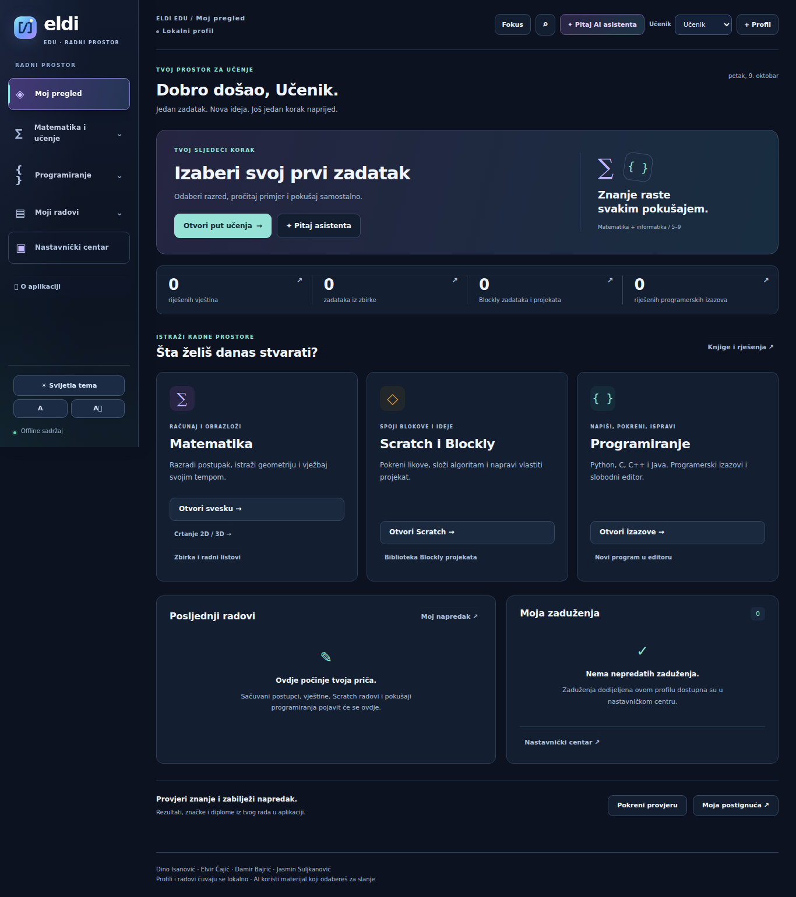
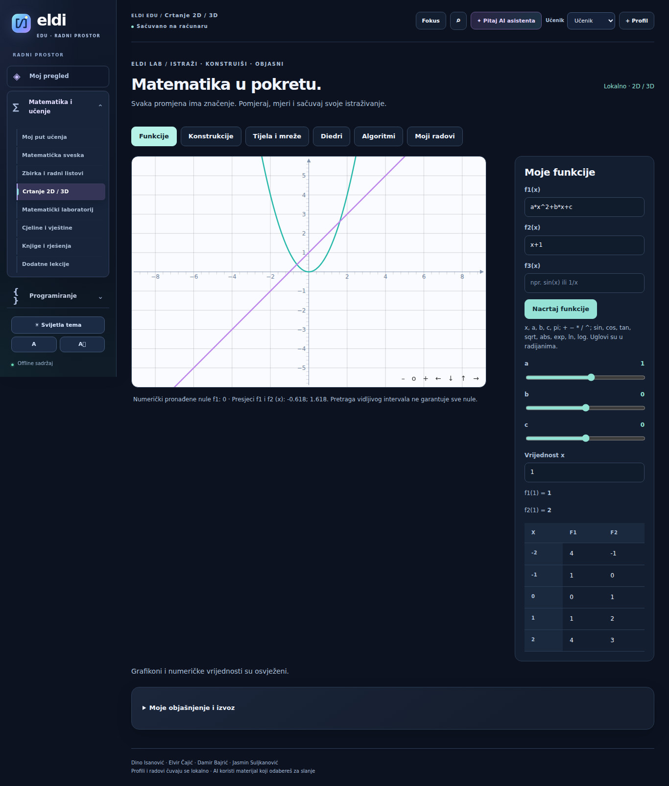
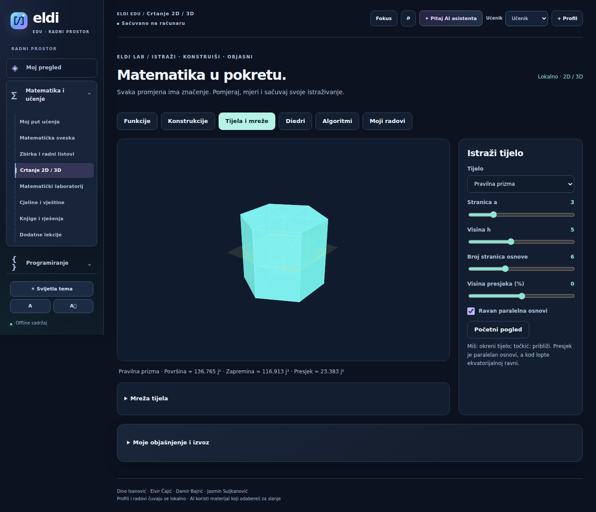
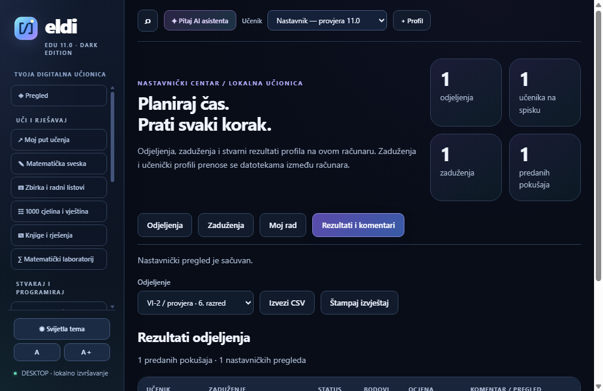

Matematika
100 vještina: objašnjenja, primjeri i praktični zadaci.
- Brojevi i decimalni sistem
- Četiri računske operacije
- Izrazi i svojstva operacija
- Problemski zadaci s prirodnim brojevima
- Skupovi i pravilnosti
MATEMATIKA + INFORMATIKA / 5–9. RAZRED
Piši matematički postupak. Stvaraj u Scratchu. Pokreni svoj prvi program. ELDI EDU prati svaki korak u tvojoj digitalnoj učionici.
Izdanje 12.0.0 · Windows 10/11, 64-bit · Osnovni sadržaj radi offline
Pogledaj aplikaciju
UČI / ISTRAŽI / STVARAJ
Pregled sadržaja ugrađenog u Windows aplikaciju. Izaberi razred i oblast, pa pogledaj teme koje te čekaju.
100 vještina: objašnjenja, primjeri i praktični zadaci.
Scratch studio za .sb3 projekte i 200 riješenih Blockly projekata za ovaj razred.
11 programerskih izazova s testovima. Python, C, C++ i Java u Windows aplikaciji.
Raspored tema je urednički plan aplikacije. Nastavnik bira sadržaj i povezuje ga sa službenim ishodima i školskom godinom.
POGLEDAJ KAKO IZGLEDA
Stvarni snimci novog radnog prostora i laboratorija 12.0.0. Otvori sliku za detaljan prikaz ili pogledaj kratki video pregled.

Crtaj tri funkcije, pomjeraj parametre i istraži numeričke nule i presjeke.

Kocka, kvadar, prizma, piramida, valjak, kupa i lopta. Mijenjaj dimenzije i istraži presjeke.
Video prikazuje pet stvarnih snimaka ekrana: početni pregled, matematičku svesku, Scratch studio, programerske izazove i nastavnički centar. Ne prikazuje rad mišem niti snimak nastave.
ZA NASTAVNIKE
Nastavnički centar povezuje odjeljenja, zaduženja i pregled rada na jednom računaru.
Radovi se trenutno prenose datotekama. Zajednički mrežni nalozi i automatska sinhronizacija između računara pripadaju narednoj fazi.
Preuzmi upute za nastavnike ↗
SPREMNO ZA TVOJ RAČUNAR
Datoteke se preuzimaju sa službenog ELDI EDU GitHub repozitorija.
Instalacijski paket s prečicom za pokretanje.
Preuzmi aplikaciju ↓Prenosivi EXE, bez instalacije · 607,1 MB ↗Prenosiva aplikacija, pet ZIP zbirki i izvora te upute za početak.
Preuzmi kompletan ZIP ↓Raspakuj cijeli paket, pa pokreni Portable EXE.
Tačne veličine datoteka prikazane su na GitHubu; trajni link „Provjeri najnovije izdanje” otvara trenutno GitHub izdanje.
POČNIMO JEDNOSTAVNO
Za Windows 10/11, 64-bit, izaberi instalaciju ili kompletan ZIP. ZIP prvo raspakuj u svoju mapu.
Pokreni aplikaciju. Dodaj profil učenika i odaberi razred u željenoj oblasti.
Otvori Moj put učenja, Matematičku svesku ili Scratch studio. Rad sačuvaj i napravi sigurnosnu kopiju.
Ovo je centar za preuzimanje, pregled sadržaja i podršku. Zadaci, lokalno izvršavanje programa i čuvanje rada koriste se u Windows aplikaciji.
Osnovni nastavni sadržaj, Scratch, Blockly i lokalni programi rade bez interneta. AI odgovori i preuzimanje novih izdanja zahtijevaju internet. Za asistenta koristi vlastiti račun i opcije koje su ti dostupne u aplikaciji.
Na računaru na kojem se koristi aplikacija. U sekciji Kopije i nova izdanja izvezi cijelu učionicu; profil učenika možeš izvesti u sekciji Moj napredak. Kopiju čuvaj na drugom sigurnom mjestu.
Potvrda bilježi rezultat rada u aplikaciji. Mrežna provjera QR kodom nije dio ovog web paketa.
Izdanje 12.0.0 nije digitalno potpisano. Preuzimaj iz navedenog GitHub repozitorija; za provjeru preuzete datoteke dostupna je datoteka SHA256SUMS.txt. Na školskom računaru postupaj prema pravilima administratora.
RAZVOJ APLIKACIJE
Novi radni prostor, 2D/3D laboratorij, stvarni blokovski debugger, ruksak, verzije projekata i provjera svih testova. Detalji i granice funkcija nalaze se u bilješkama izdanja.
Pročitaj bilješke izdanja ↗Zajednički nalozi, predaja od kuće i sinhronizacija rezultata traže server i bazu podataka. Sljedeći korak je provjera mogućnosti postojećeg hostinga.
Planirana nadogradnja; još nije dostupna.
PODRŠKA / ZAJEDNO UNAPREĐUJEMO ELDI
U prijavi navedi verziju aplikacije, oblast, očekivani rezultat i šta se zaista dogodilo. Za javnu GitHub prijavu potreban je GitHub račun. Ukloni imena i privatne podatke učenika iz snimaka ekrana.